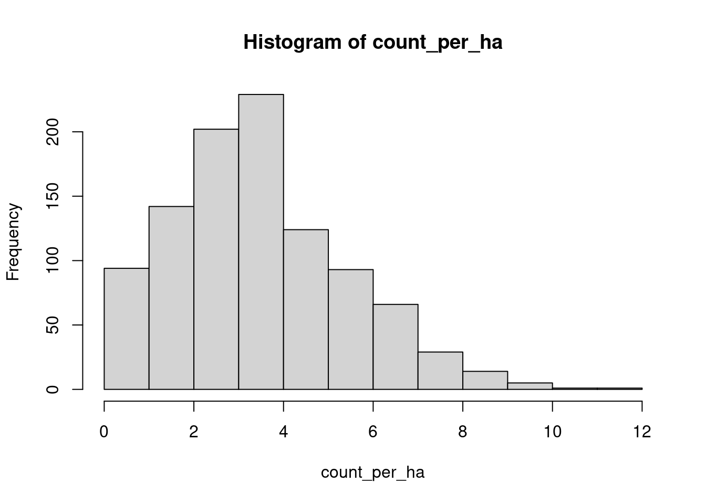
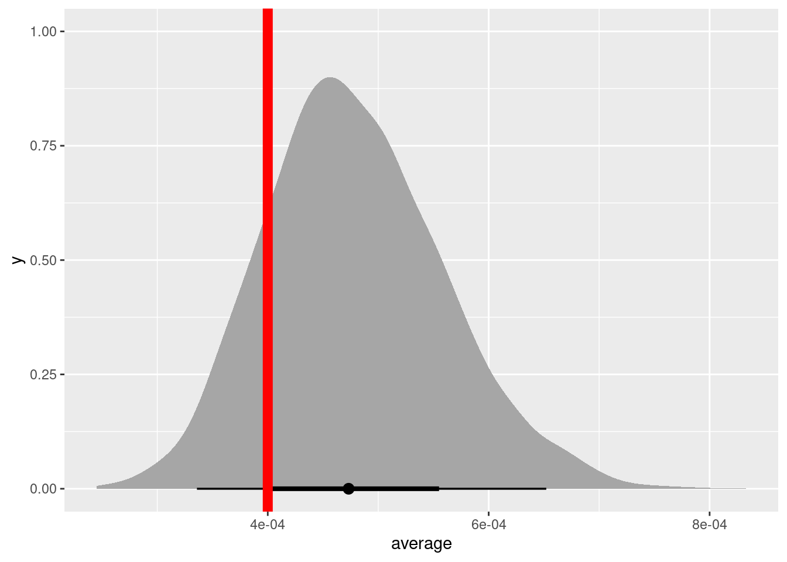
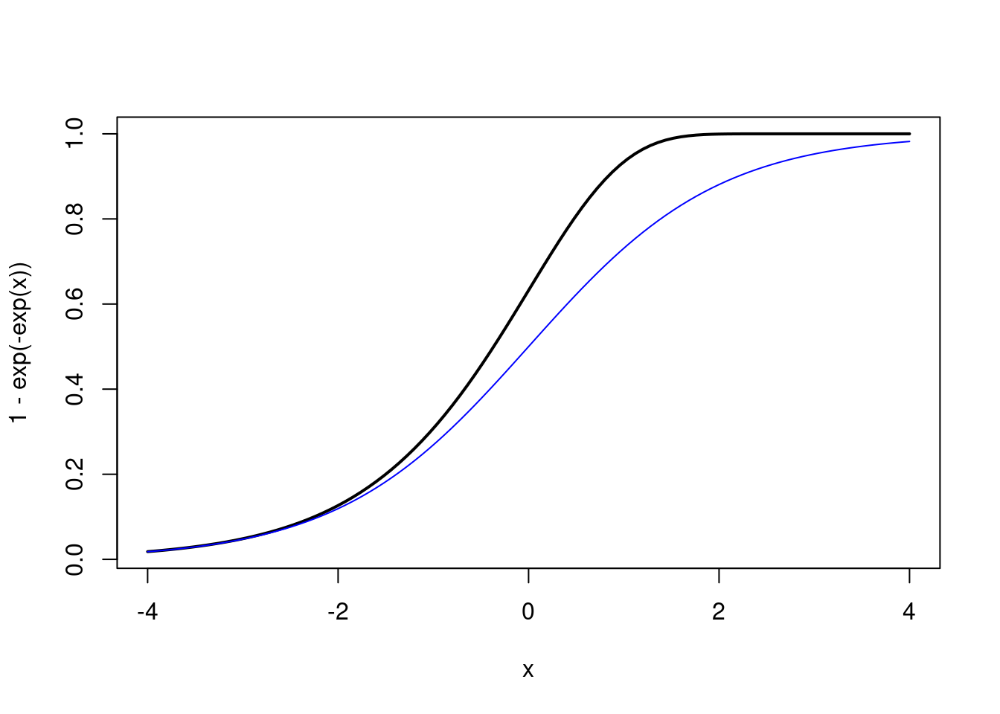

We’re going to search a plot and try to count all the individuals of a rare orchid. These orchids are rather rare, and even where they are common you’re not likely to find them.
library(tidyverse)library(brms)
Loading required package: Rcpp
Loading 'brms' package (version 2.23.0). Useful instructions
can be found by typing help('brms'). A more detailed introduction
to the package is available through vignette('brms_overview').
Attaching package: 'brms'
The following object is masked from 'package:stats':
ar
library(tidybayes)
Attaching package: 'tidybayes'
The following objects are masked from 'package:brms':
dstudent_t, pstudent_t, qstudent_t, rstudent_t
# how many orchids in a hectare? that is 100 x 100 m, or 10 000 square metersplants_per_sq_m <-4/1e4count_per_ha <-rpois(1000, lambda = plants_per_sq_m*1e4)hist(count_per_ha)

mean(count_per_ha)
[1] 3.949
var(count_per_ha)
[1] 3.968367
Let’s say that surveys originally followed a protocol of searching rectangular transects for this plant. A single transect is 5m x 100m. Later, survey protocol was changed and the length of the transect was increased to 250m
Two ways to plot the posterior distribution of average flower number and compare it to the true values.

Two ways to plot the posterior distribution of average flower number and compare it to the true values.
Why does it work
The offset() function simply adds a term to our linear predictor and gives it a coefficient of exactly 1 – that is, it does not multiply it by anything at all. Together with the link function, it lets us scale the mean of the model by a constant term. This helps us to control for exposure or effort, when you find more of the response because you search over a larger space:
\[
\begin{align}
y &\sim \text{Pois}(\lambda) \\
y &\sim \text{Pois}(e^\alpha) \\
y &\sim \text{Pois}(e^{\beta_0 + \text{offset}(\ln(\text{effort}))}) \\
y &\sim \text{Pois}(e^{\beta_0 + \ln(\text{effort})}) \\
y &\sim \text{Pois}(e^{\beta_0}e^{\ln(\text{effort})}) \\
y &\sim \text{Pois}(\text{effort}\times e^{\beta_0}) \\
\end{align}
\]
Binary data
Detection of frog calls in a survey. Listening for the same time (but that doesn’t always happen!)
survey durations in minutes
frog_data <-data_frame(survey_times =rep(c(30, 10, 15, 45), each =12))## calls on average once every 13 minutesfrog_calling_rate_per_min <-1/13frog_calls <- frog_data |>rowwise() |>mutate(calls_per_min =list(rbinom(n = survey_times,size =1,prob = frog_calling_rate_per_min ) ))frog_calls$calls_per_min[21]
Family: bernoulli
Links: mu = logit
Formula: call_pa ~ 1
Data: frog_call_pa (Number of observations: 48)
Draws: 4 chains, each with iter = 2000; warmup = 1000; thin = 1;
total post-warmup draws = 4000
Regression Coefficients:
Estimate Est.Error l-95% CI u-95% CI Rhat Bulk_ESS Tail_ESS
Intercept -1.37 0.18 -1.71 -1.03 1.00 1384 2207
Draws were sampled using sampling(NUTS). For each parameter, Bulk_ESS
and Tail_ESS are effective sample size measures, and Rhat is the potential
scale reduction factor on split chains (at convergence, Rhat = 1).
plogis(-1.4)
[1] 0.1978161
The right way to control for unequal effort in a logistic regression (AKA a bernoulli GLM) is via the “cumulative log-log link” or cloglog link.
The equation for this function is
\[
1 - e^{-e^a}
\]
We can plot this equation against the logistic curve like so:
curve(1-exp(-exp(x)), xlim =c(-4, 4), lwd =2)curve(plogis(x), col ="blue", add =TRUE)

where \(a\) is the linear predictor (ie our model equation).
Notice what happens when we add a log offset to this equation:
Running /usr/lib/R/bin/R CMD SHLIB foo.c
using C compiler: ‘gcc (Ubuntu 11.4.0-1ubuntu1~22.04.2) 11.4.0’
gcc -I"/usr/share/R/include" -DNDEBUG -I"/home/andrew/R/x86_64-pc-linux-gnu-library/4.5/Rcpp/include/" -I"/home/andrew/R/x86_64-pc-linux-gnu-library/4.5/RcppEigen/include/" -I"/home/andrew/R/x86_64-pc-linux-gnu-library/4.5/RcppEigen/include/unsupported" -I"/home/andrew/R/x86_64-pc-linux-gnu-library/4.5/BH/include" -I"/home/andrew/R/x86_64-pc-linux-gnu-library/4.5/StanHeaders/include/src/" -I"/home/andrew/R/x86_64-pc-linux-gnu-library/4.5/StanHeaders/include/" -I"/home/andrew/R/x86_64-pc-linux-gnu-library/4.5/RcppParallel/include/" -I"/home/andrew/R/x86_64-pc-linux-gnu-library/4.5/rstan/include" -DEIGEN_NO_DEBUG -DBOOST_DISABLE_ASSERTS -DBOOST_PENDING_INTEGER_LOG2_HPP -DSTAN_THREADS -DUSE_STANC3 -DSTRICT_R_HEADERS -DBOOST_PHOENIX_NO_VARIADIC_EXPRESSION -D_HAS_AUTO_PTR_ETC=0 -include '/home/andrew/R/x86_64-pc-linux-gnu-library/4.5/StanHeaders/include/stan/math/prim/fun/Eigen.hpp' -D_REENTRANT -DRCPP_PARALLEL_USE_TBB=1 -fpic -g -O2 -ffile-prefix-map=/build/r-base-xupQTd/r-base-4.5.2=. -fstack-protector-strong -Wformat -Werror=format-security -Wdate-time -D_FORTIFY_SOURCE=2 -c foo.c -o foo.o
In file included from /home/andrew/R/x86_64-pc-linux-gnu-library/4.5/RcppEigen/include/Eigen/Core:19,
from /home/andrew/R/x86_64-pc-linux-gnu-library/4.5/RcppEigen/include/Eigen/Dense:1,
from /home/andrew/R/x86_64-pc-linux-gnu-library/4.5/StanHeaders/include/stan/math/prim/fun/Eigen.hpp:22,
from <command-line>:
/home/andrew/R/x86_64-pc-linux-gnu-library/4.5/RcppEigen/include/Eigen/src/Core/util/Macros.h:679:10: fatal error: cmath: No such file or directory
679 | #include <cmath>
| ^~~~~~~
compilation terminated.
make: *** [/usr/lib/R/etc/Makeconf:202: foo.o] Error 1
Start sampling
summary(call_cll_brm)
Family: bernoulli
Links: mu = cloglog
Formula: call_pa ~ 1 + offset(log(survey_times))
Data: frog_call_pa (Number of observations: 48)
Draws: 4 chains, each with iter = 2000; warmup = 1000; thin = 1;
total post-warmup draws = 4000
Regression Coefficients:
Estimate Est.Error l-95% CI u-95% CI Rhat Bulk_ESS Tail_ESS
Intercept -2.53 0.14 -2.81 -2.26 1.00 1482 1857
Draws were sampled using sampling(NUTS). For each parameter, Bulk_ESS
and Tail_ESS are effective sample size measures, and Rhat is the potential
scale reduction factor on split chains (at convergence, Rhat = 1).